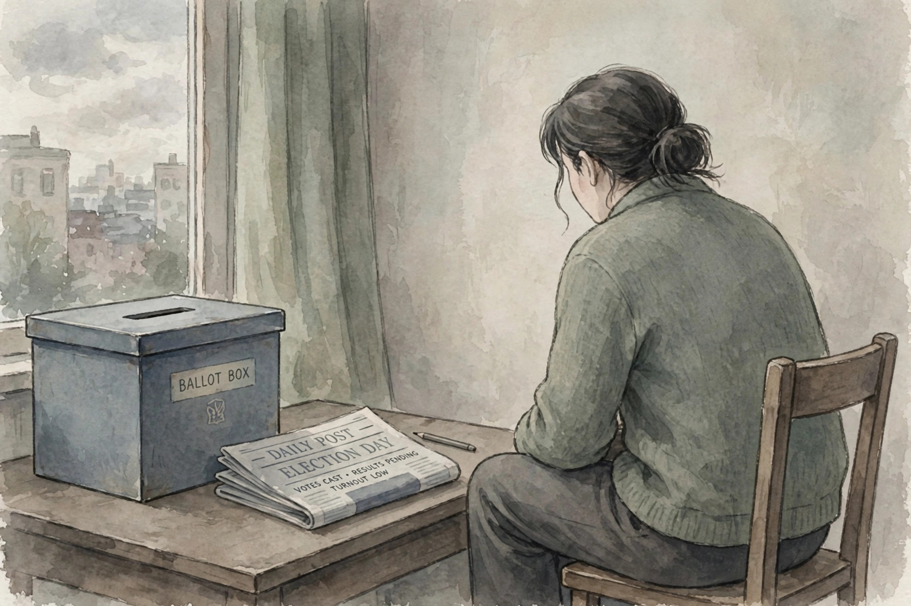

For other uses, see Apathy (disambiguation).
Apathy is a lack of feeling, emotion, interest, or concern about something. It is a state of indifference, or the suppression of emotions such as concern, excitement, motivation, or passion. An apathetic individual has an absence of interest in or concern about emotional, social, spiritual, philosophical, virtual, or physical life and the world. Apathy can also be defined as a person's lack of goal orientation.
Apathy may be a sign of various psychological and neurological conditions, including depression, schizophrenia, dementia and Parkinson's disease. In political contexts, apathy — in the form of low voter turnout and disengagement from civic life — is frequently discussed as a challenge to democratic participation.

A seated figure turned away from a ballot box and a newspaper, in muted colours.
The term apathy derives from the Greek apatheia (ἀπάθεια), literally "without suffering" or "without feeling", compounded from the privative prefix a- and pathos (πάθος), "passion" or "suffering". In Stoic philosophy, apatheia had a positive meaning: a state of equanimity in which a person is not disturbed by the passions. The modern English sense, of indifference or listlessness, developed during the seventeenth and eighteenth centuries.
Apathy can arise as a symptom of medical conditions such as hypothyroidism, anaemia, depression and other mental disorders, or as a side effect of certain medications. It is also commonly reported after damage to the frontal lobes of the brain, and in neurodegenerative diseases including Alzheimer's disease, where it is among the most frequent neuropsychiatric symptoms.
Political apathy, particularly voter apathy, refers to public indifference toward elections, political events and civic duties. Causes proposed include a sense that one's vote does not matter, distrust of politicians, satisfaction with the status quo, and barriers to participation. See also youth politics.
General reference works on psychology and psychiatry; Greek etymological dictionaries.